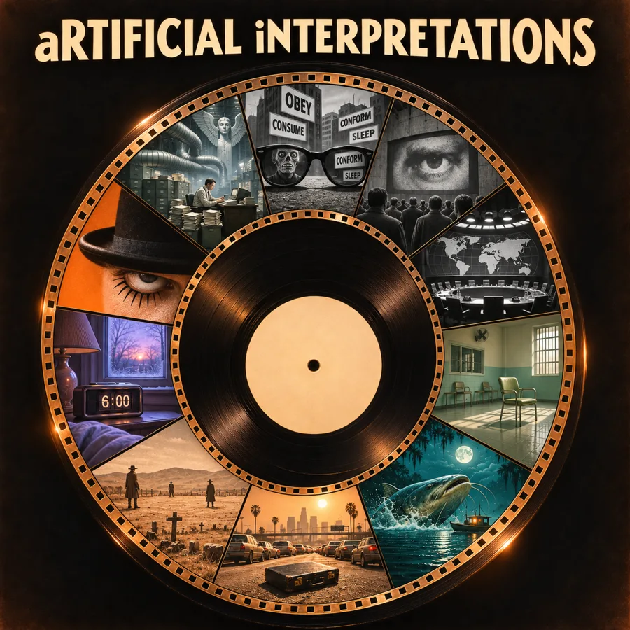
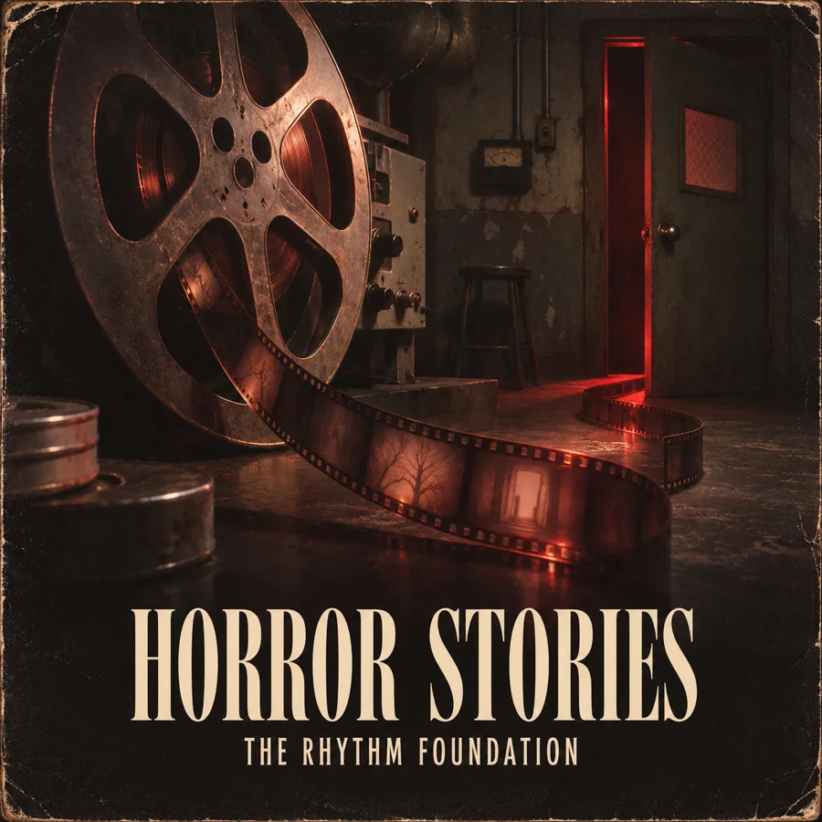
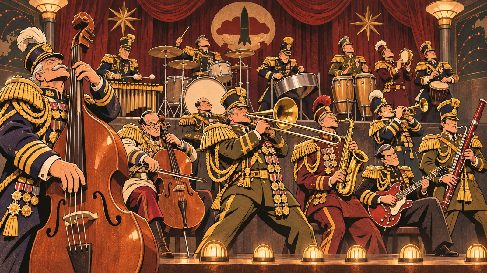
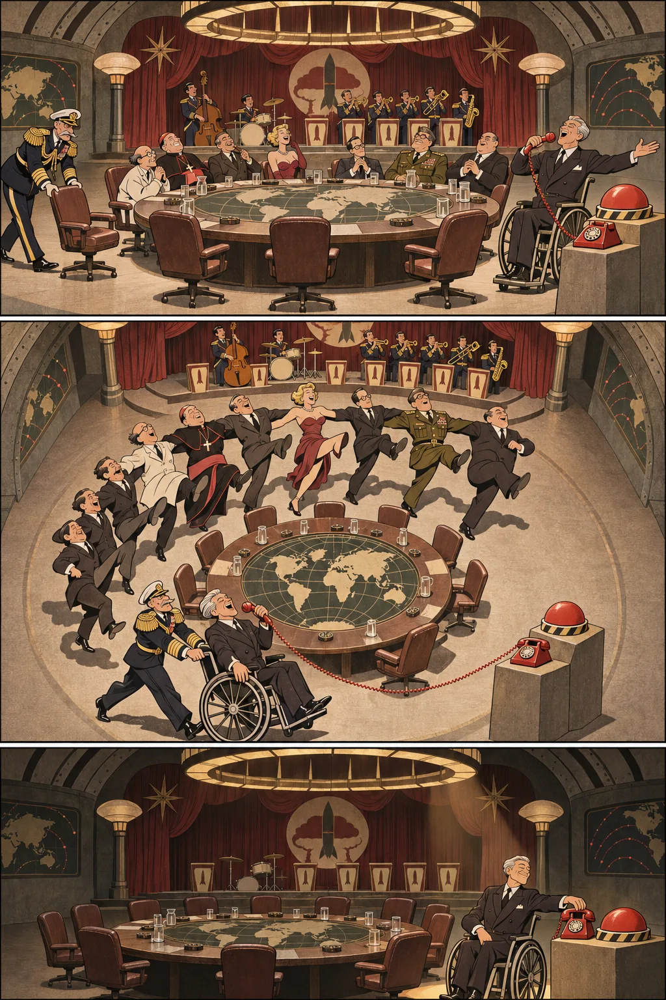

Music · The Rhythm Foundation
A sound with
room to roam.
Bass-led and brass-fed, with a deep bottom end. Explore the albums, meet the imagined ensemble, and follow the music into animation.

10 tracks
Artificial Interpretations
Movie-inspired songwriting, interpreted through TRF’s shifting musical vocabulary. The pictures offer clues. The songs tell their own stories.
- Obey
- Thought Crime
- How I Learned to Stop Worrying
- Normal is a Relative Term
- Fish Story
- Just 1 More Thing
- Everybody’s Got a Price
- Same Old Song
- Manufactured Morality
- Dreams in Triplicate

11 tracks · Follow-up album
Horror Stories
Fear, appetite, inherited darkness and a shopping trip through the apocalypse. Eleven songs, each with its own unsettling visual world.
- The Devils in the Details
- Trust Nothing
- Pain is the Prize
- All Work, No Salvation
- Never Close Your Eyes
- Family Business
- Sometimes Dead is Better
- The Son of Perdition
- Say My Name
- Shopping for the Apocalypse
- No Room in Hell
Music video in development
Red Button Cabaret
How I Learned to Stop Worrying turns the war room into a dance floor.

The president sings into a red cell phone from Wheelchair 1. Every dance returns him to the big red button, and every reach is interrupted by the next partner.
The generals and politicians compete to push his chair. When the music stops, the pusher gets the seat beside him. The president is delighted by the attention.

The imagined ensemble
The Council
Thirteen performers, including the three-piece Pulse Trinity. Their characters give the musical roles a face and a story.
-
Professor
Xylophone/Harmonica | The Frontman
-
Pulse Trinity
Bongos/Percussion | The Heartbeat
-
Viktor
Trumpet | The Herald
-
Thane
Trombone + Voice Box | The Phonetic Twin
-
Depth Charge (Dc)
Contrabassoon | The Cannon
-
Kronos
Drums | The Timekeeper
-
Solara
Steel Drums | Captured Sunlight
-
Monk
Stand Up Bass | The Foundation
-
Lyra
Cello + Voice Box | The Phonetic Twin
-
Echo
Bassoon/Saxophone | The Voice
-
Rex
Guitar | The Lightning
Explore the earlier catalog
- Co-sign
- Medicine Man
- TRU Tribe
- Track 0 (instrumental)
- 3+1 or 9
- Sovereign Chant
- The Awakening
- Liturgy of Vibration
- Bom-Bass-Ska
- Bass Ska Band Players
- Plandemic
- Parasite
- Native of the TRUth
- Hollywood Dead
- Echo & Answer (instrumental)
- Corruption
- Buck the System
- Brain Soup
- Blog Sawyer
- Auto pen Saints
- AnyWays
- Am I
- 1st Pulse (instrumental)
- Hashtag
- Am I White Enough For Ya (Schooly D)
- WarPings / Ƿær Pīɡæs (Black Sabbath - 68 min)
- Gettin Digi With It (Will Smith) (DIGI Certified)
- Du Hasted (Rammstein)
- ðə ˈsɪknəs (Disturbed)
- Bawitdaska (Kid Rock)
Earlier titles and working versions from the studio archive. Browse the public artist page for available recordings.